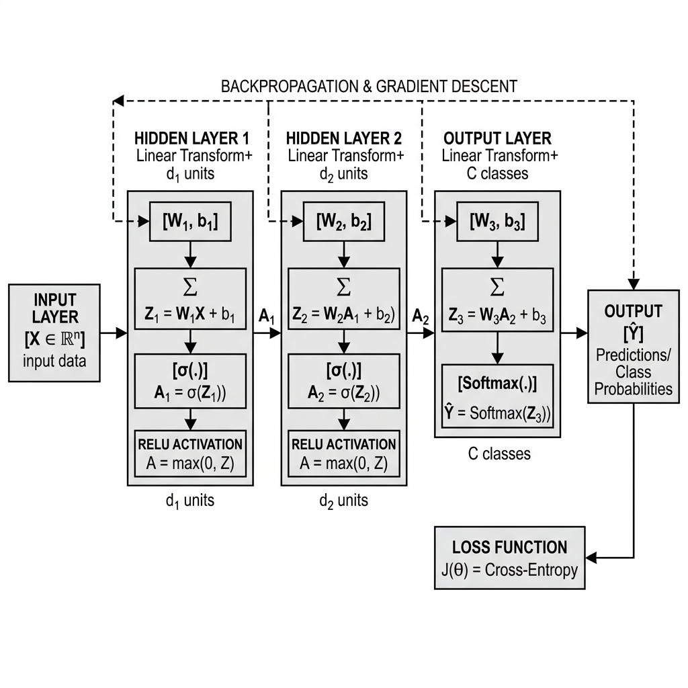
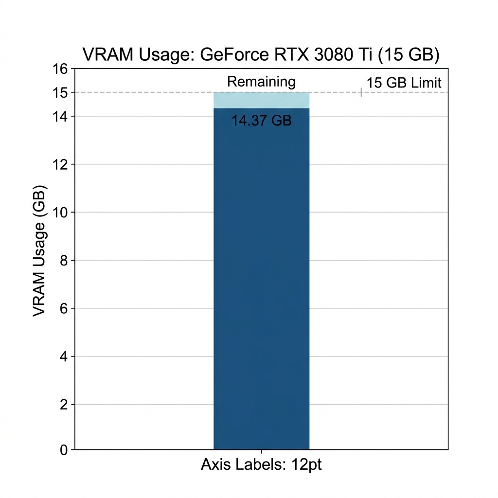
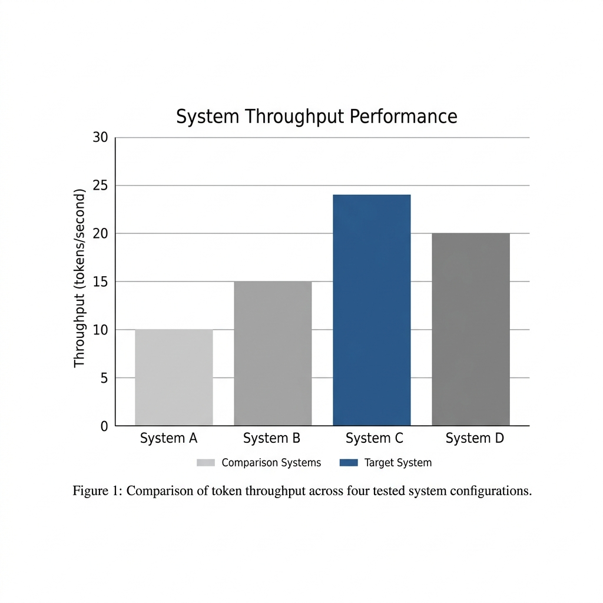
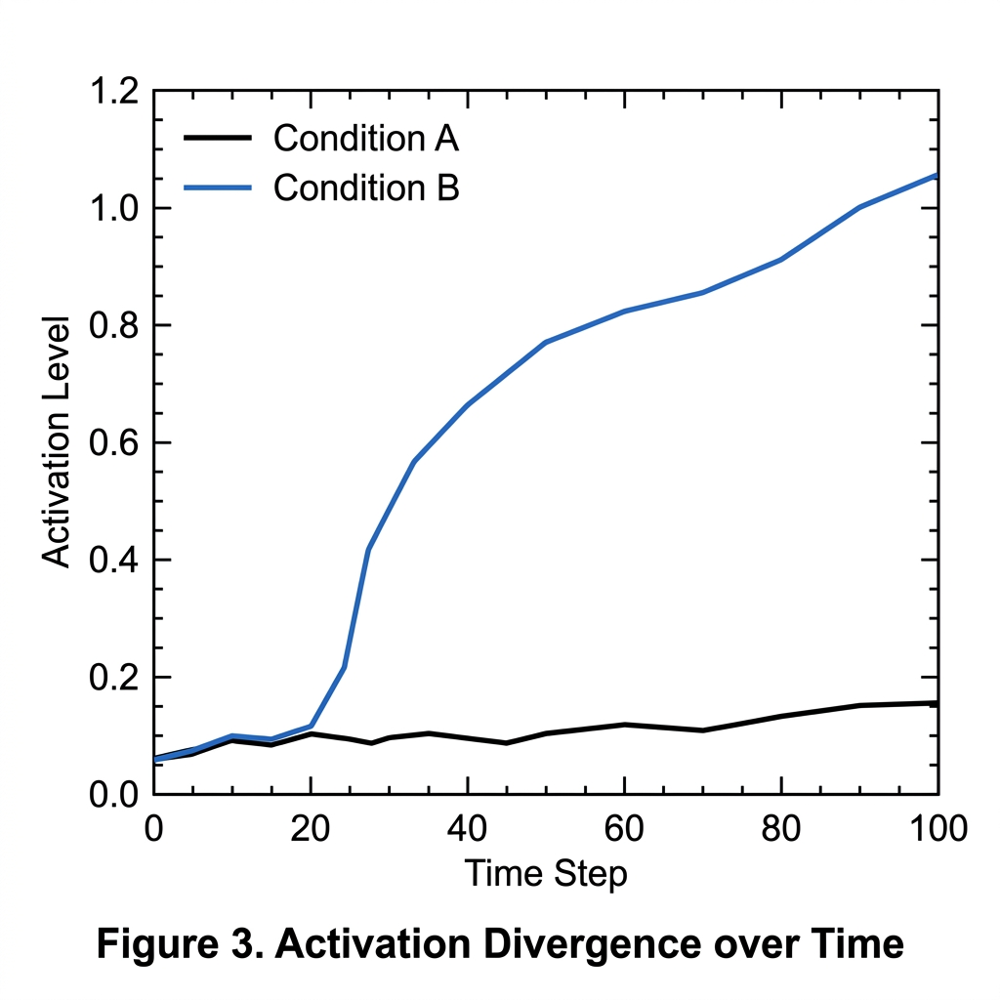

Overview
Cross-Architecture Layer Grafting (CALG) is an experimental systems architecture methodology exploring whether independently trained foundation models can be physically combined into a single executable neural graph without joint pretraining, instruction tuning, or full-scale backpropagation.
Can structurally incompatible neural networks be mechanically fused and executed as a single runtime architecture using only dimensional projection, low-rank transformation, and localized graph modifications?
To investigate this question, I constructed an experimental hybrid architecture named FusionLM-v0.1-alpha.
FusionLM combines:
- Phi-4-mini-instruct as the host language backbone
- The visual subsystem from Llama-3.2-11B-Vision-Instruct
- Coding-domain task vector deltas derived from Qwen2.5-Coder
- Mathematics-domain task vector deltas derived from Gemma-2-Math
These components originate from unrelated model families with incompatible hidden dimensions, initialization histories, and latent geometries. Rather than retraining the architecture, CALG attempts to bridge these incompatibilities through explicit dimensional mapping and low-rank projection.
What This Work Demonstrates
- Structural integration of heterogeneous model components
- Runtime graph stabilization after cross-family modification
- Successful tensor-level execution of the resulting composite architecture
- Stable inference execution within a 15 GB VRAM budget
- Measurable activation participation from grafted layers
What This Work Does NOT Demonstrate
- Successful capability transfer
- Functional multimodal reasoning
- State-of-the-art performance
- Semantic interoperability between model families
The resulting architecture exhibits severe representation-space mismatch and produces semantically degraded outputs. The significance of the work is therefore architectural rather than capability-based.
Core Idea
Traditional model merging techniques require architectural isomorphism: identical layer counts, identical tensor dimensions, and identical vocabularies.
CALG removes this restriction by treating neural networks as modular computational components rather than fixed monolithic structures. The methodology introduces three primary mechanisms:
Cross-modal dimensional projection
Low-rank task-vector extraction
Cross-family layer grafting
These operations allow incompatible model families to coexist within a single execution graph.

Experimental Configuration
Host Backbone
Phi-4-mini-instruct
3.8B parameters
Hidden dimension: 3072
Vision Component
Llama-3.2 Vision subsystem
Projected through a 7680 → 3072 bridge matrix
Domain Components
Qwen2.5-Coder & Gemma-2-Math
task-vector deltas injected into deep reasoning layers (L28-L31)
Runtime Results


Key Finding
Heterogeneous foundation-model components can be projected into a common tensor geometry, inserted into a shared execution graph, and executed under consumer hardware constraints without full retraining.

However:
Structural compatibility alone does not imply representational compatibility.
The architecture compiles and executes, but latent manifold mismatch prevents coherent reasoning.
Future Work: Boundary-Restricted Latent Healing
The next phase of this research investigates what I refer to as Boundary-Restricted Latent Healing.
Rather than training the entire architecture, only the graft boundaries would be adapted:
- Visual projection bridge
- Injected reasoning layers
- Cross-family transition zones
This would test whether localized adaptation can restore semantic interoperability while preserving the low-compute philosophy of CALG.